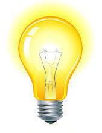
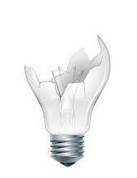
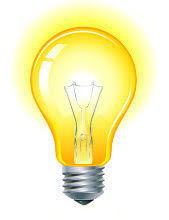
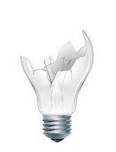

Lâmpadas
Vamos incorporar um interruptor, seus anseios e medos.
A atividade consiste em revesar imagens na página HTML utilizando Javascript.
Teremos essas três imagens
 



(Link para download)
Deve iniciar a página com a imagem da lâmpada apagada. Então quando o mouse estiver encima da lâmpada ela deve acender e caso clique na imagem ela quebra.
Se dividirmos em etapas, podemos ter:
- Criar a página com a imagem da lâmpada apagada.
- Capturar o evento onmouseover. Chamar uma função javascript que altera o src da imagem para mostrar a lâmpada acessa.
- Capturar o evento onclick. Chamar uma função javascript que altera o src da imagem para mostrar a lâmpada quebrada. Não é necessário mas é interessante tentar fazer com que depois de a lâmpada quebrar ela não volte aos estados de apaga e acessa, ou seja permaneça quebrada.
Alguns links uteis